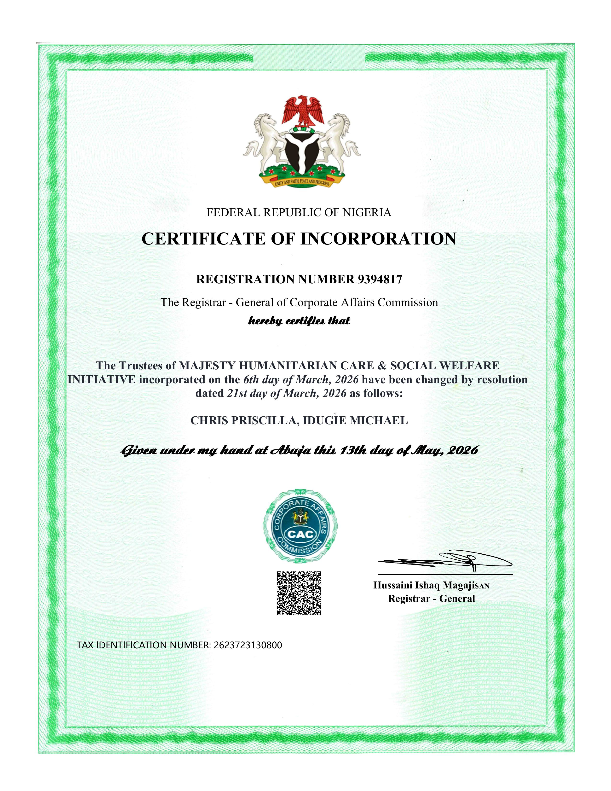

About Majesty Cares
Meeting people at the point of their need.
Majesty Humanitarian Care & Social Welfare Initiative is a humanitarian and social welfare organization founded in 2019 to serve vulnerable children, widows, orphans, and underserved communities across Nigeria.
Our Story
We exist to meet people at the point of their need through education support, food relief, orphanage outreach, widow empowerment, medical assistance, school materials, and community based welfare programs.
From orphanage visits to school material distribution and widow support, Majesty Cares has continued to build a foundation of compassion, credibility, and grassroots service.
Mission
To provide humanitarian relief, educational support, child protection, and social welfare interventions that restore dignity and hope to vulnerable people and underserved communities.
Vision
To become a trusted humanitarian platform building safer, healthier, and more hopeful communities across Nigeria.

Our Values
The principles behind the work.
Compassion
We respond to human need with care and urgency.
Accountability
We document our work and protect donor trust.
Dignity
We serve people in a way that respects their humanity.
Child Protection
We believe every child deserves safety, care, and education.
Community Partnership
We work with traditional rulers, chiefs, youth leaders, schools, and local actors.
Transparency
We use evidence, photos, documentation, and clear reporting to build credibility.

Governance and Credibility
Structured grassroots humanitarian work.
The organization uses community intelligence, local relationships, and project documentation to guide its field work. Official identity assets are included on this site for transparency.
We carefully avoid exaggerated claims. Our strongest proof is simple: real outreach photos, clear project timelines, direct beneficiary support, and a consistent mission since 2019.